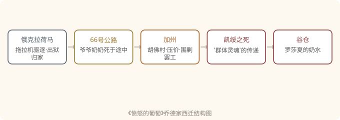

愤怒的葡萄
一、基本信息
| 作者 | 斯坦贝克 |
|---|---|
| 成书/出版 | 1939年出版（Britannica） John Steinbeck — Encyclopaedia Britannica（百科全书） |
| 国别/地区 | 美国 |
| 时代 | 现当代 · 20世纪 |
| 体裁 | 长篇小说（大萧条史诗） |
| 语言 | 英语 |

二、创作背景
题材（Britannica）：'about the Joad family's migration from the Dust Bowl'（乔德一家从沙尘暴区的西迁）——1930年代俄克拉荷马佃农被机器与银行驱逐、66号公路西迁加州的百万移民潮（通说数字待核）。
创作基础：斯坦贝克为《旧金山纪事》写的系列报道《收割的吉普赛人》（1936，通说待核）与-visits to the camps（通说待核）。
荣誉与风波（Britannica）：'won the Pulitzer Prize and National Book Award'（普利策+国家图书奖）；出版即遭焚禁（Kern County 图书馆焚书与禁令——通说待核）。
改编：1940年约翰·福特电影（Henry Fonda 主演，通说待核）。
三、内容脉络
驱逐：俄克拉荷马佃农汤姆·乔德出狱归家，发现家园被'怪物'（银行与拖拉机）推平——'怪物把人当零件'（原文意，待核）；全家（三代13口）与传教士凯绥·施尔菲（前牧师）一起西迁加州。
66号公路：爷爷奶奶相继死于路上；'Route 66是移民之路'插章（通说待核）；营地与餐馆的群像——'穷人帮穷人'。
加州的真相：胡佛村（Hooverville）、果园压价、'安姑娘'式的罢工破坏——工资被压至饥饿线；凯绥在罢工冲突中被打死——'你们不要一个人单打独斗'（原文意，待核）。
结局：汤姆决意继承凯绥、'人在哪里，哪里就有我的灵魂'（原文意，待核）藏身运动；乔德家在谷仓以女儿罗莎夏的奶水救助饿晕的男人——结尾的'圣母怜子'意象（通说）。
四、主要人物表
| 人物 | 身份 | 说明 |
|---|---|---|
| 汤姆·乔德 | 出狱的佃农之子 | 从个人主义到'群体灵魂'的转变（凯绥的影响——通说） |
| 妈妈（乔德妈妈） | 家庭支柱 | '女人的生命像溪流'（原文意，待核）——斯坦贝克最重要的女性形象 |
| 凯绥·施尔菲 | 前牧师 | '基督形象'的组织者：罢工中的殉道（通说解读） |
| 罗莎夏 | 临产的女儿 | 丧婴后以乳汁救人——结尾的象征 |
| 爷爷、奶奶 | 老一代 | |
| 乔德爸爸 | 家长 | 权威的失落与重建（通说） |
五、主题与艺术特点
- '怪物'与人的战争：银行/拖拉机/警察/业主协会——体制性的恶（通说）。
- 群体灵魂（oversoul）：凯绥引爱默生式'超灵'——个人主义向集体主义的转化（通说）。
- 圣经结构：出埃及—应许之地—弥赛亚（凯绥）—圣母（罗莎夏）——通说。
- 插章技法：宏观'社会章'与微观'家庭章'交替——电影蒙太奇式结构（通说待核）。
- 语言：俄克拉荷马方言的音译拼写（通说）。
六、影响与评论
- Britannica（Steinbeck 条目）：'won the Pulitzer Prize and National Book Award'；1962诺奖。
John Steinbeck — Encyclopaedia Britannica（百科全书） - Britannica：1964年总统自由勋章；'championed ordinary people and the working classes'。
John Steinbeck — Encyclopaedia Britannica（百科全书） - 政治史：引发加州农业资本与国会的调查（通说待核）；1940福特电影成为美国电影经典（通说待核）。
John Steinbeck — Encyclopaedia Britannica（百科全书） - 中文接受：胡仲持等1940s译本（通说待核）与今天的多版本。
John Steinbeck — Encyclopaedia Britannica（百科全书）
七、阅读建议
- 方言音译（'I tole you'类）与30年代美国农业经济——配注释。
- 插章（interchapters）与叙事章的交替——理解其'合唱'功能。
- 圣经隐喻（出埃及等）需要对照。
- 胡仲持译《愤怒的葡萄》（人民文学出版社旧版，通说待核）与胡允桓译本（译林，通说待核）。
- 英文本：Penguin Classics（含导论，通说待核）。
通读30章 → 精读第5章（'怪物'银行）、第25章（'葡萄'愤怒段）与结尾奶水段 → 对照1940电影。
八、待核实
- 1939年4月14日 Viking 出版与首印数待核。
- Kern County 焚书禁令文件待核。
- 胡仲持/胡允桓译本信息待核。
- 1940福特电影获奖记录待核。
本页主要来源
相关作品：日瓦戈医生平凡的世界哈克贝利·费恩历险记